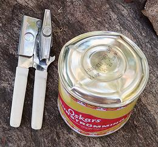
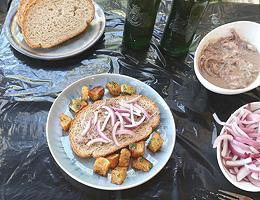

Surströmming AdventureSweden - Surströmming | |||||
| Makes: Effort: Sched: DoAhead: |
12 app * 5 min No |
In Sweden, consumption of this appetizer is reserved for special occasions - particularly parties where the guests will be sufficiently intoxicated. The product is regulated by the Swedish government to assure quality, and that it is properly fermented before shipment. For more detail and history for this product, see our Surströmming page. | |||
| The product in these photos was canned in July, 2019 and shipped to me in November 2019. The can was a bit swollen then, but the photo to the left was taken just before opening in February 2020. The "Best Before" date is clearly shown as Feb 2021. Given condition of the can in Feb 2020, I presume that is the expected detonation date. | |||||

The Surströmming Can is ReadyHere the Surströmming can is ready to be opened, and in keeping with tradition, this is properly done outdoors. A good stable flat rock a little ways from the doorway seemed just the right place for this. |
The Can is Now OpenI first just made a puncture with the can opener, and waited a while for the hissing and bubbling to subside. I then continued with the can opener to completely remove the lid. The opener did balk at the creases in the lid, and if the Surströmming had been aged for a few months longer, more violent tools may have been required to fully remove the lid. One producer recommends that all participants at a Surströmming party gather close around at the opening of the can and deeply inhale the aroma. The producer says this will so stun the olfactory nerves the odor will not be noticed afterwards. I severely doubt this work, as I was very close when I opened the can, and the strong aroma continued to be evident. The smell was not as bad as I had been prepared for, but then, I'm accustomed to East and Southeast Asian preserved fish products, especially those made from salted anchovies, digested by their own enzymes. |
The Table is Set, and Surströmming is ServedTraditionally, Surströmming is served out of doors. It is normally eaten smeared on bread, so plenty of good bread needs to be available. The most standard accompaniments are Slivered Red Onions, Potatoes, Sour Cream, and Beer - plenty of Beer - or Schnapps - but probably both. |

A plate with Surströmming on Bread, dressed with OnionsHere we have a slice of bread, smeared with Surströmming and dressed with Onions, Potatoes on the side. The Surströmming isn't very visible because it's about the color of the bread, and at this age there's very little solid in the can, except bones, so it pretty much just soaks in. I discarded the backbone, but the myriad of tiny ribs and pin bones were not really noticeable. |
Yes, I did eat it!I ate that whole slice of bread, including the small piece still on the plate in the photo. And surprise! It tasted just like it smelled. Like an extremely pungent fish spread with undertones of organic solvents. It's actually fairly similar to the murky Vietnamese fish sauce Mam Nem, though that is made with an adequate amount of salt, so is a whole lot less smelly, and it's used as an ingredient rather than spread on bread. No, I didn't get sick from this, there were no tremors or hallucinations. My only concern is that in the future, when I eat a slice of multi-grain bread, or fried potatoes, will the taste of Surströmming come bubbling up from my subconscious? One thing I did do after this adventure, was to hose down that rock I opened the can on. I was pretty sure every raccoon for miles around was now on full alert, just waiting for the sun to go down. |